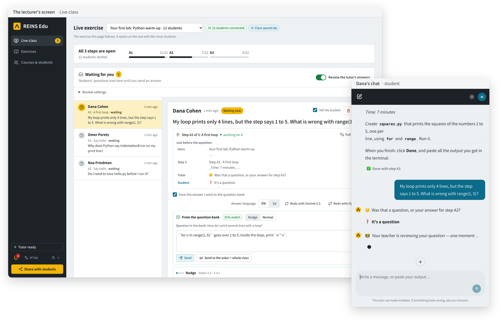
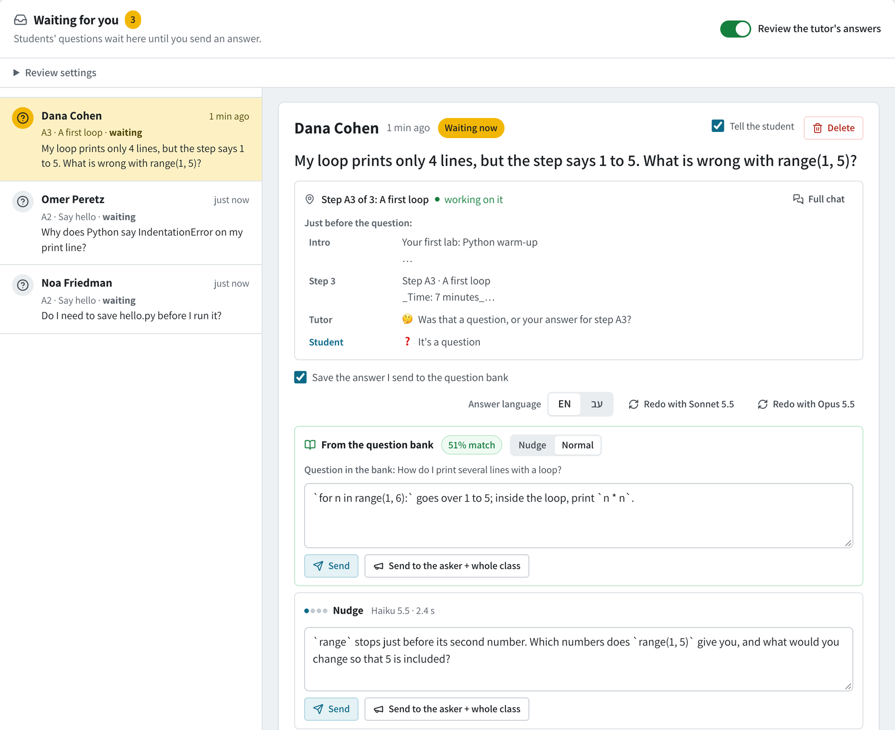

REINS Edu
REINS Edu
REINS stands for Reviewed Explanations, Instructor-Navigated Steps

An AI tutor for programming labs. The lecturer holds the reins.
Students work through a lab in a chat with an AI tutor that guides instead of handing out answers. Everything happens live: the lecturer sees every conversation, checks each answer before it reaches the student, and sends it as it is or corrected. The lecturer can also send a question and its answer to the whole class at once, and lead the class step by step.
Free and open source (MIT). It runs on your own computer; students need only a browser.

What the lecturer controls
Students already use AI. REINS Edu puts it inside the lab, where you can see it and steer it.
Every answer can wait for you
In review mode a student's question is held. The tutor drafts several answers, from a small nudge to a full explanation. You pick one, edit it or write your own, and only then does the student see it.
The class moves together
A class-paced lab opens one step at a time for everyone. You see who finished each step, open the next one when the class is ready, and move a single student back or forward.
A tutor that guides
The tutor answers with hints and questions, and follows the notes you write for each exercise. It does not hand over the solution.
Check that they understand
After a step, or whenever you choose, students get a short question, and their answers come back to you.
Nothing waits unseen
Questions, steps to check and answers to decide wait in one list, and the side rail counts them. A pop-up and a bell tell you when something new arrives, whatever page you are on.
It stays on your computer
Accounts, chats and grades are kept on the lecturer's computer, and nothing is sent to the authors. Questions go to the model provider you choose, Anthropic or Google, with your own API key.

A class, start to finish
Students install nothing. They open one link and sign in.
Write or upload a lab
A lab is a folder: the steps students see, and the notes and expected answers only you see. Three samples are included.
Share one link
Add your students from a CSV file, in English or Hebrew, and press Share with students.
Teach
Watch the chats, approve the tutor's answers, and open the next step when the class is ready.
Install
For macOS, Windows and Linux. You need about 1.5 GB of disk space and an internet connection. The first start installs Python and everything else into the program's own folder.
macOS or Linux, in the Terminal
curl -fsSL https://raw.githubusercontent.com/Shpanier/reins-edu/main/install.sh | bashWindows, in PowerShell
irm https://raw.githubusercontent.com/Shpanier/reins-edu/main/install.ps1 | iex- The first start downloads about 350 MB and takes a few minutes. Later starts take seconds.
- The dashboard opens at
http://localhost:8010and asks you to create your account. - Then it asks for an API key from Anthropic or Google. The key stays on your computer, and you pay the provider for what your class uses.